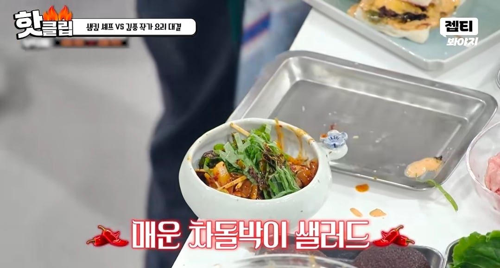
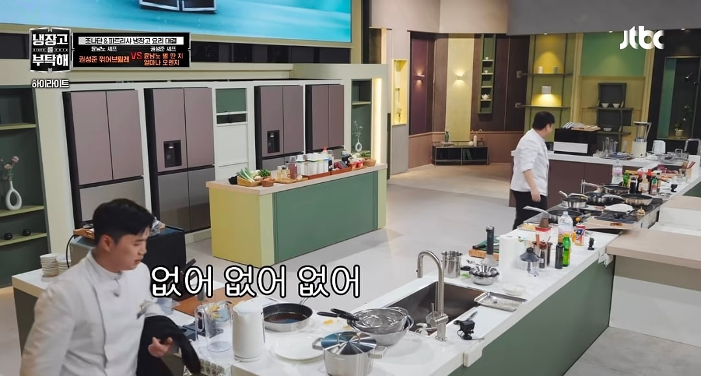
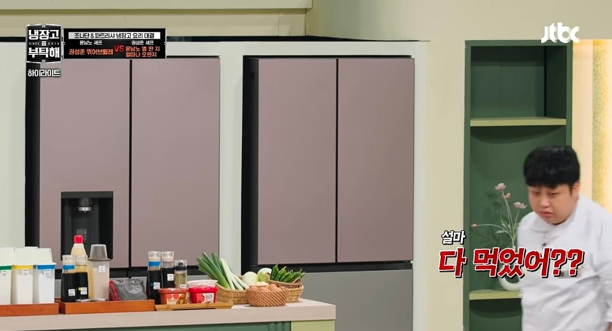
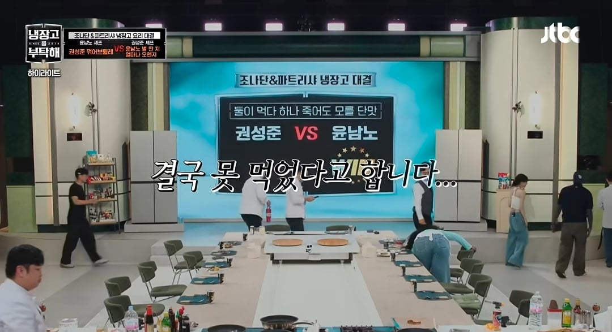

매운맛 중독 수준의 MZ게스트들
매운 맛에 유독 약한 모습을 보이는 윤남노
매운 향에도 힘들어 함

쏟아져나오는 극한의 매운 요리들
배고픔을 참다참다 결국 시식을 도전해보는데
(재채기임)



그나마 달달한 권성준 요리는 양 적게 만들어서 잔반도 없었음ㅠㅠ
돼무룩
매운맛 중독 수준의 MZ게스트들
매운 맛에 유독 약한 모습을 보이는 윤남노
매운 향에도 힘들어 함

쏟아져나오는 극한의 매운 요리들
배고픔을 참다참다 결국 시식을 도전해보는데
(재채기임)



그나마 달달한 권성준 요리는 양 적게 만들어서 잔반도 없었음ㅠㅠ
돼무룩
뭐야 맵찔이였어? 의외네 윤남노 사천짜파게티 이러길래 잘먹는줄
사천짜파게티랑 불닭보다 매운거랑 같나
단련해야지 뚱땡보야
진짜 반쪽이됐네ㅋㅋ행복함이 사라짐
출연료 없이 재능기부하다 갔네
헛뚱뚱이였네;
고양이혀에 맵찔인 난 너무 공감이 감
일단 매운거 한번 잘못 먹고 나면 다른 음식 조차 제대로 못먹음
예를 들면 국밥 먹을때 아무생각없이 고추 한번 잘못먹으면 뜨거운 국물조차 너무 민감하게 반응이옴
그래서 거의 물배 채우고 와서 절대 고추 안먹음 먹더라도 무조건 풋고추
출연료 징수 실패
남노개귀엽네진짜 ㅋㅋㅋㅋㅋ
‘ㅅㅂ 내 출연료가’